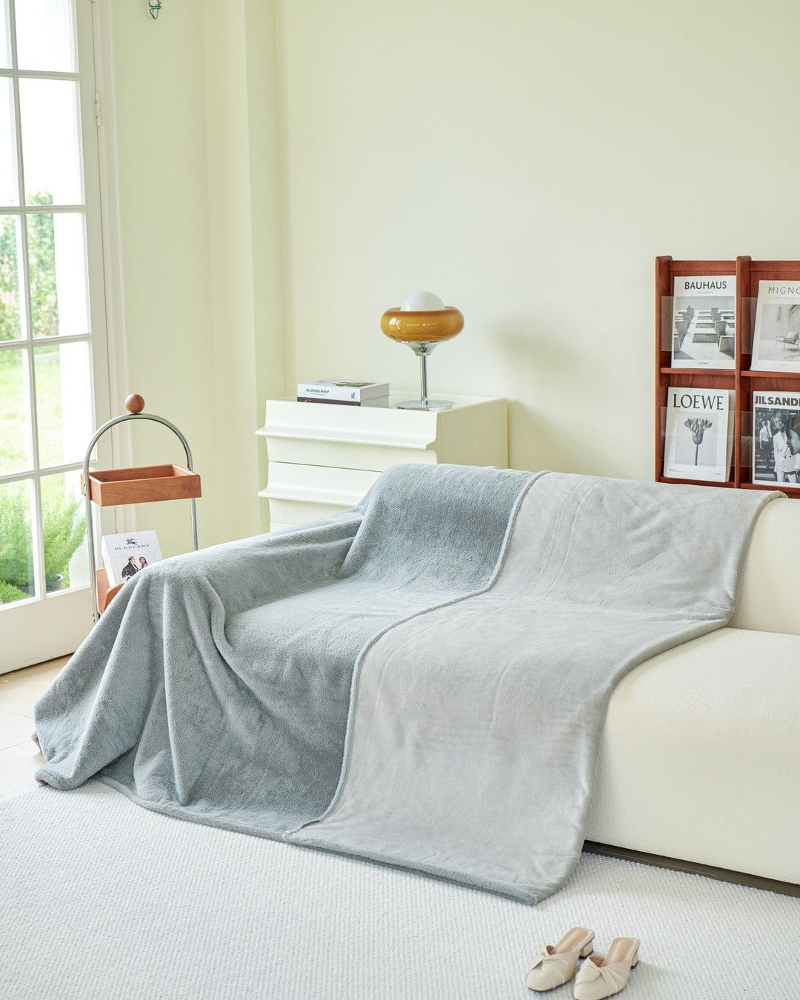
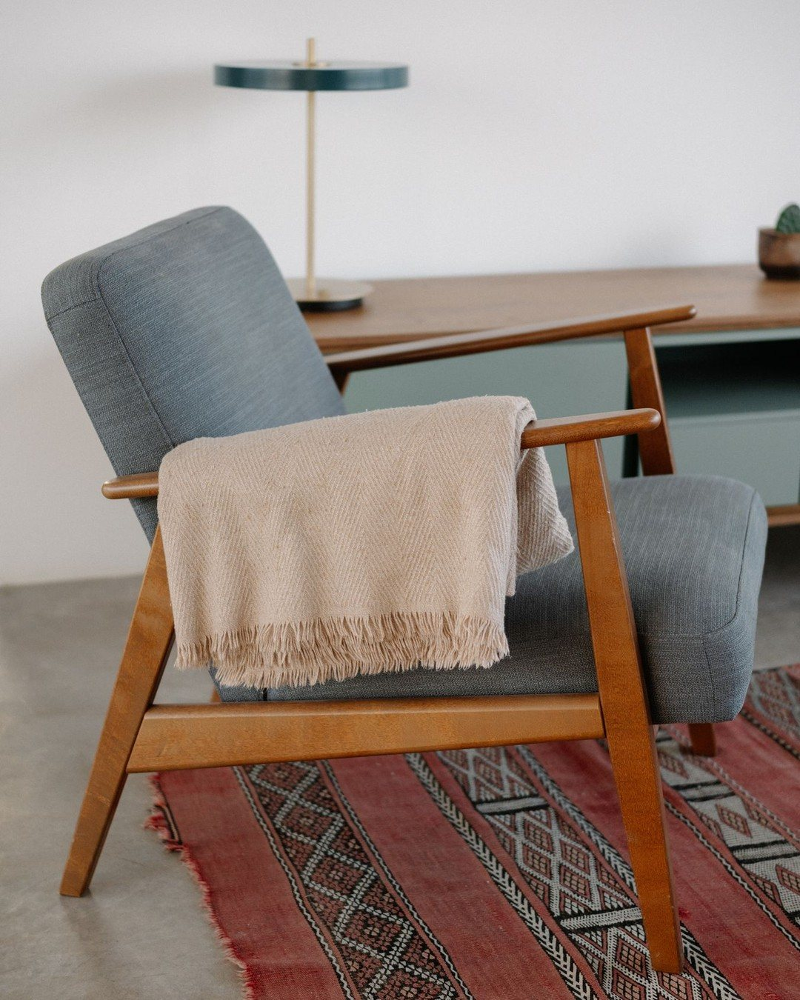
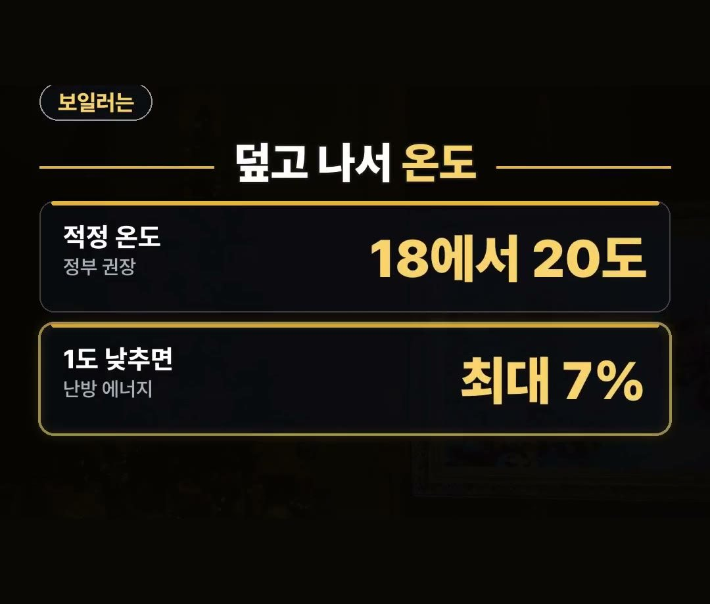
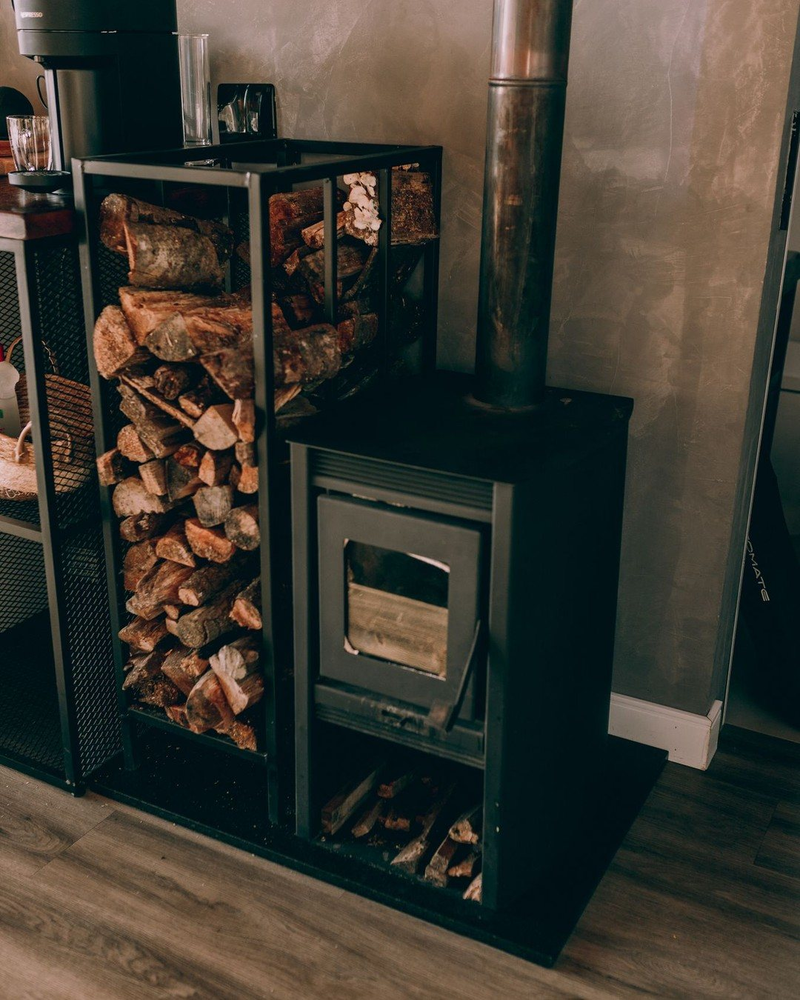

무릎담요 추천, 보일러 올리기 전에 덮으면 체감온도 2.5도
※ 이 글에는 제휴 링크가 포함되어 있으며, 링크를 통해 구매하시면 일정 수수료를 받을 수 있습니다. (가격은 같습니다)
※ 이 포스팅은 쿠팡 파트너스 활동의 일환으로, 이에 따른 일정액의 수수료를 제공받습니다.
11월이 되면 아침저녁으로 무릎부터 시려 오는 날이 많아져요.
이맘때 보일러 온도부터 올리기 쉬운데, 그 전에 무릎담요부터 덮어 보면 어떨까요?
이 글에서는 무릎담요를 덮으면 체감온도가 얼마나 오르는지, 보일러는 몇 도에 맞추면 되는지 정리해 드릴게요.
정책브리핑 온맵시 캠페인 자료에 따르면 무릎담요를 덮으면 체감온도가 2.5도 올라요.
보일러는 그다음, 1도 낮추면 난방 에너지를 최대 7% 아낄 수 있다는 것까지 기억하세요! 🧣
무릎담요 추천 이유, 체감온도 2.5도
정책브리핑에 실린 온맵시 캠페인 자료에 따르면 무릎담요를 덮으면 체감온도가 2.5도 오른다고 해요.
같은 자료에서 내복과 양말은 이렇게 소개돼요.
- 내복: 체감온도 3도
- 무릎담요: 체감온도 2.5도
- 양말: 체감온도 0.6도
내복 다음으로 무릎담요가 높아요.
덮기만 하면 되니 집에서도 사무실에서도 바로 쓸 수 있어요.
무릎담요는 무릎부터 발등까지
무릎담요를 고를 때는 길이를 먼저 보세요.
무릎부터 발등까지 덮이는 길이면 앉아 있을 때 다리 전체가 따뜻해요.
- 고를 때 볼 점 1: 무릎부터 발등까지 덮이는 길이
- 고를 때 볼 점 2: 흘러내림

고를 때 볼 점, 흘러내림
앉았다 일어났다 하다 보면 담요가 자꾸 흘러내려서 다시 덮게 돼요.
그래서 흘러내림을 같이 보는 게 좋아요.
무릎담요 상품 후기에는 안 흘러내린다는 말이 많아요.
똑딱이처럼 고정할 수 있는 담요인지, 상품 설명에서 고정 방식을 한 번 확인해 보세요.

보일러는 그다음, 18에서 20도
무릎담요를 덮은 다음에 보일러 온도를 보세요.
행정안전부가 정책브리핑에서 안내한 겨울철 내용은 이래요.
- 겨울철 실내 적정온도: 18에서 20도
- 보일러 설정 온도 1도 낮추면: 난방 에너지 최대 7% 절약
덮고도 추우면 그때 1도만 올리세요.
순서만 바꿔도 보일러를 덜 올리게 돼요.

무릎담요와 보일러, 순서대로 정리하면
지금까지 내용을 순서로 묶어 볼게요.
1. 무릎이 시리면 무릎담요부터 덮기(체감온도 2.5도)
2. 무릎부터 발등까지 덮이는 길이, 흘러내림 확인하기
3. 보일러는 18에서 20도에 맞추기 4. 덮고도 추우면 그때 1도만 올리기

정리
- 온맵시 캠페인 자료에 따르면 무릎담요는 체감온도 2.5도, 내복 3도, 양말 0.6도예요
- 겨울철 실내 적정온도는 18에서 20도예요
- 보일러를 1도 낮추면 난방 에너지를 최대 7% 아낄 수 있어요
제품 링크는 아래에 모아 두었어요.
📌 2026년 10월 기준 정보예요. 가격은 시기에 따라 달라질 수 있어요.
· 정책브리핑 온맵시 캠페인 (내복 3도·카디건 2.2도·무릎담요 2.5도·양말 0.6도 체감온도)
· 정책브리핑 겨울철 난방비 절약 팁 (행정안전부 · 실내 18~20도 · 1도 낮추면 최대 7%)
· korea.kr
사진·영상영상 화면: Pexels (Anna Lupa, Darina Belonogova, Hanna Pad, Leeloo The First, Matu Randall, Necla Aydın)
사진: Pexels (SlipcoverKAS .COM, Raymond Petrik, Alexander Mass, Butwhosamy)